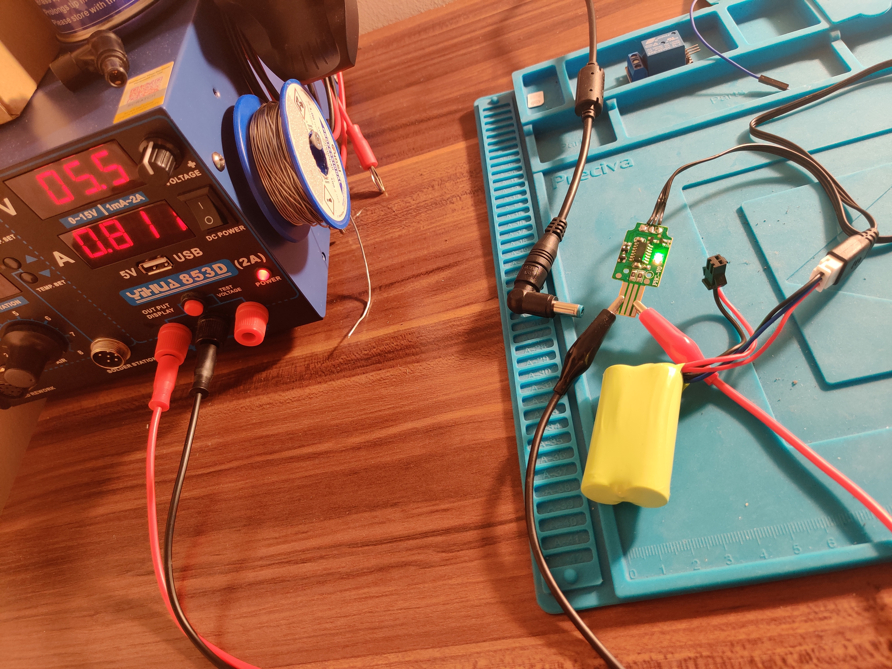
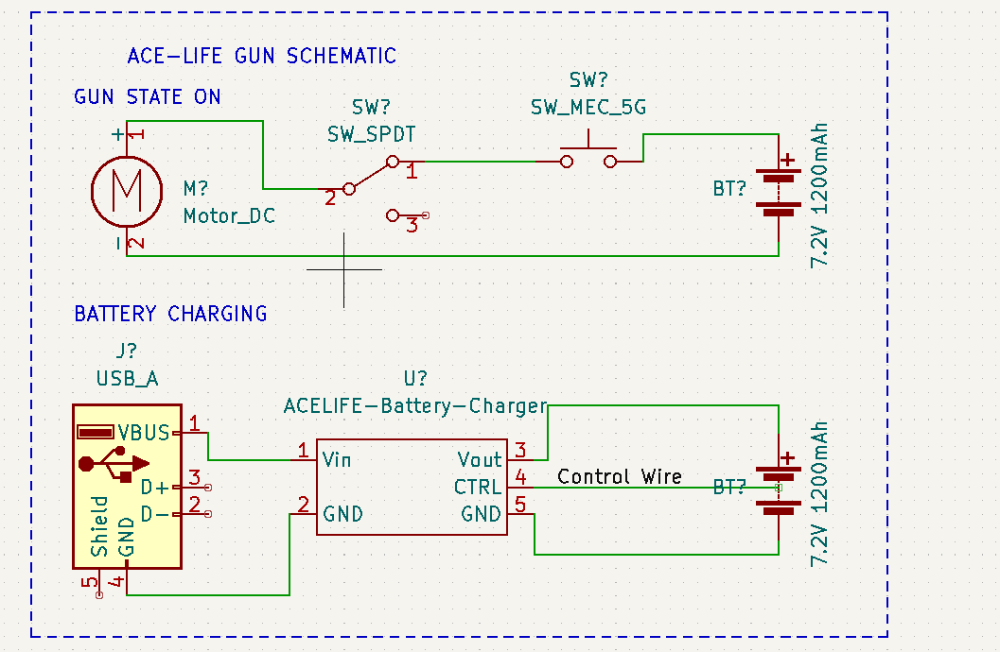
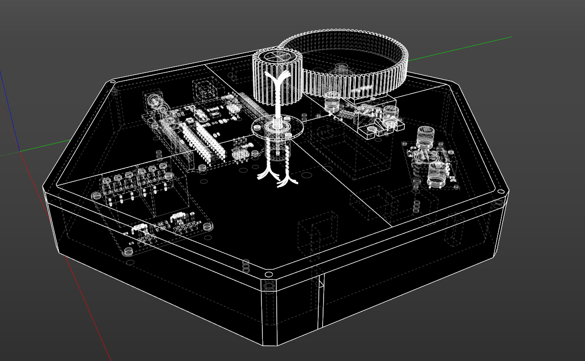
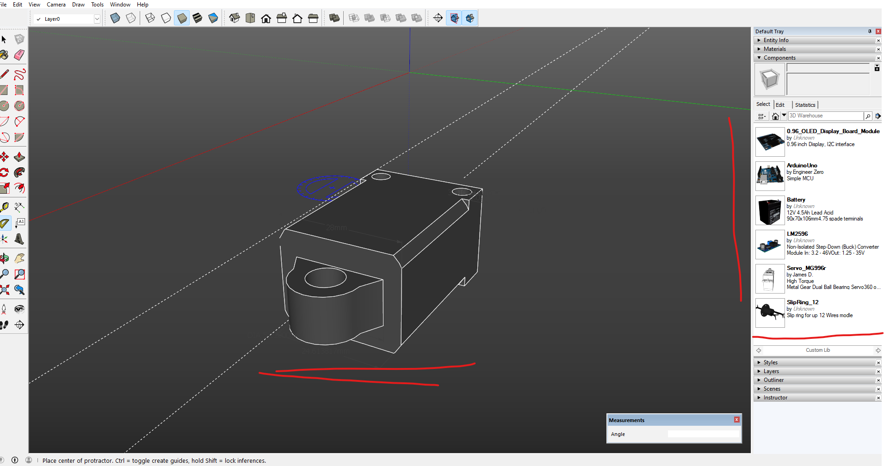

Sentry Project is coming along slowly - this is because of a bit of laziness and a general lack of time; HOWEVER...
I have managed to investigate the USB port charger for the water-bullet gun and update schematic with circuitry for the shooting system.

I could not find any datasheet for the main IC on the PCB board based on the IC's part number on the internet...
Nevertheless, I have managed to gain an understanding that this circuit is doing two things:
boosting the voltage from 5V to 7.4 to charge the lithium battery pack (boost converter),,
and manages the battery's charge (BMS), as there is one extra wire connected to the battery pack

02-09-2023 Sentry #6: X direction improved and further works
Hello again,
once again I was silent for a long time - I went on vacation to Bulgaria during august so not much has happend that month.
I have managed to come up with a better design for X-axis - it is not longer wobbly! See the video below:
The design is much better as now it has supports on the sides. I have used bearings as I thought they will be needed - common sense.
Otherwise plastic against plastic won't be moving nicely.
Furthermore, I am once again doing the 3D modeling... I hope I will be done soon as I am quite tired of 3D modelling now.
Plan is that I have to only now make the cover for the top and place holder for the bullets. Then I will be concentraing on Hardware and Software integration.
Small peak at the work I am doing now:
See you later!
23-07-2023 Sentry #5: XY direction and initial wiring
To sum up things, I have progress Sentry project to the point where I can some coding... to find
max,min and other values.
Here are some materials that you may find intresting:
Initial basic state machine (I currently reading a good book about state automata - therefore it may change!)
Spinning X axis :-)
Initial wiring of Buck convertes with battery, switch - I have modifed battery charger so it has a easy charging port.
(Originally it had crocodile clips...)
02-07-2023 Sentry #4: Gears and their setback..
As I have realised that the design i had in mind would absolutly tangle the wires even with using the slip ring..
I have lost hope....
However, I have came up with an idea to use gears! This will allow for no wire tangling and the 120 degree servo can be use!
As iwth the right Gear Ration, servo can be transformed into 360 mmovement at the cost of a resolution.
No much progress as I have to learn about gears, design them and model them...
Till next time!

20-06-2023 Sentry #3: Progression
Right, so ... Its clear I am not consistent.
I have been doing quite a lot lately about the project; mainly 3D modelling, planning and ordering missing/extra parts.
I have managed to 3D model legs, battery container and motherboard.
10-06-2023 Sentry #2: Progression
Well its been a while... went for vacation to Cornwall wish was in May and I have been concentraing on my full-time job and trianing...
What little I did to the project:
Due to my laziness and the deadline for comicon, I will reduce the functionality (expectations) of the Sentry Project - it can always be better!
Bought more tools and components for the project e.g. bolts and nuts, crimp tool with crimps, soldering PCB and connector etc.
have done initial testing of the servo motors and relay modules - It looked fine!
Decided on the battey - it is a lead acid battery 12V 4.5ah - Yes it will be heavier but its less complicated to manage.
Waiting for the Slip ring for the cables to arrive... should come soon from far East...
Switch to modeling in SketchUp - its just much simpler adn quicker learn. I have made my own component library so they can be reused

I will try to be more frequent with updates and just be less lazy!!!
.... Although I'm going to watch Spidervers tomorrow :D